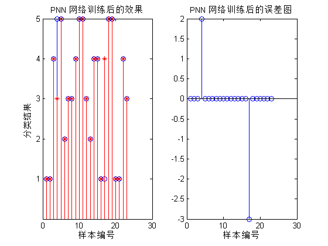
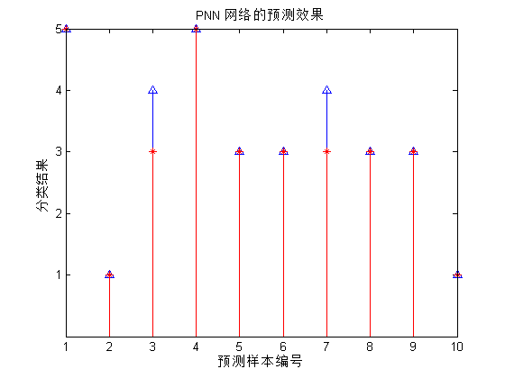

Contents
Matlab神经网络43个案例分析
清空环境变量
clc;
clear all
close all
nntwarn off;
warning off;
数据载入
load data
选取训练数据和测试数据
Train=data(1:23,:);
Test=data(24:end,:);
p_train=Train(:,1:3)';
t_train=Train(:,4)';
p_test=Test(:,1:3)';
t_test=Test(:,4)';
将期望类别转换为向量
t_train=ind2vec(t_train);
t_train_temp=Train(:,4)';
使用newpnn函数建立PNN SPREAD选取为1.5
Spread=1.5;
net=newpnn(p_train,t_train,Spread)
net =
Neural Network
name: 'Probabilistic Neural Network'
efficiency: .cacheDelayedInputs, .flattenTime,
.memoryReduction
userdata: (your custom info)
dimensions:
numInputs: 1
numLayers: 2
numOutputs: 1
numInputDelays: 0
numLayerDelays: 0
numFeedbackDelays: 0
numWeightElements: 207
sampleTime: 1
connections:
biasConnect: [1; 0]
inputConnect: [1; 0]
layerConnect: [0 0; 1 0]
outputConnect: [0 1]
subobjects:
inputs: {1x1 cell array of 1 input}
layers: {2x1 cell array of 2 layers}
outputs: {1x2 cell array of 1 output}
biases: {2x1 cell array of 1 bias}
inputWeights: {2x1 cell array of 1 weight}
layerWeights: {2x2 cell array of 1 weight}
functions:
adaptFcn: (none)
adaptParam: (none)
derivFcn: 'defaultderiv'
divideFcn: (none)
divideParam: (none)
divideMode: 'sample'
initFcn: 'initlay'
performFcn: 'mse'
performParam: .regularization, .normalization
plotFcns: {}
plotParams: {1x0 cell array of 0 params}
trainFcn: (none)
trainParam: (none)
weight and bias values:
IW: {2x1 cell} containing 1 input weight matrix
LW: {2x2 cell} containing 1 layer weight matrix
b: {2x1 cell} containing 1 bias vector
methods:
adapt: Learn while in continuous use
configure: Configure inputs & outputs
gensim: Generate Simulink model
init: Initialize weights & biases
perform: Calculate performance
sim: Evaluate network outputs given inputs
train: Train network with examples
view: View diagram
unconfigure: Unconfigure inputs & outputs
训练数据回代 查看网络的分类效果
Y=sim(net,p_train);
Yc=vec2ind(Y);
通过作图 观察网络对训练数据分类效果
figure(1)
subplot(1,2,1)
stem(1:length(Yc),Yc,'bo')
hold on
stem(1:length(Yc),t_train_temp,'r*')
title('PNN 网络训练后的效果')
xlabel('样本编号')
ylabel('分类结果')
set(gca,'Ytick',[1:5])
subplot(1,2,2)
H=Yc-t_train_temp;
stem(H)
title('PNN 网络训练后的误差图')
xlabel('样本编号')

网络预测未知数据效果
Y2=sim(net,p_test);
Y2c=vec2ind(Y2);
figure(2)
stem(1:length(Y2c),Y2c,'b^')
hold on
stem(1:length(Y2c),t_test,'r*')
title('PNN 网络的预测效果')
xlabel('预测样本编号')
ylabel('分类结果')
set(gca,'Ytick',[1:5])
